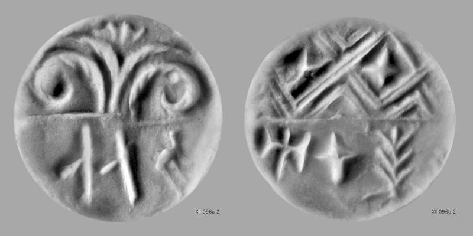
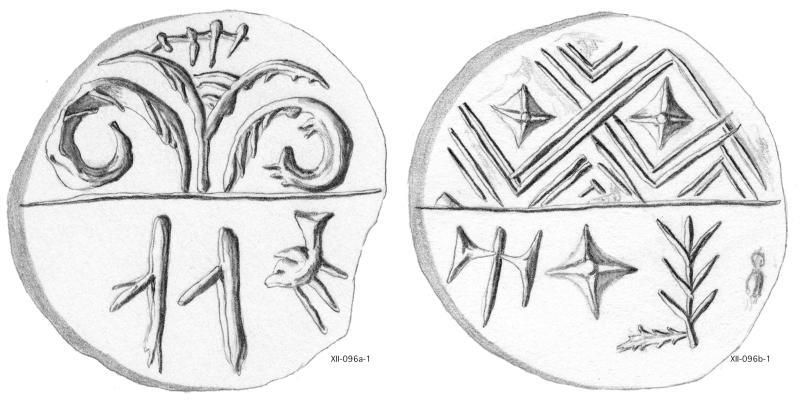

-
CRZg4
Names
CRZg4, CR Zg 4
Support
Stone object
Location
Crete
Findspot
Unavailable


Scribe
Unavailable
Context
Unavailable
Dimensions
Catalogue
Readings
1 1 0 I none
2 1 0 DA none
3 1 0 DA none
3 2 1 A none
3 2 1 RO none
3 2 1 TE none
𐘚
𐘀
𐘀𐘇𐘁𐘃
I
DA
DAAROTE
𐘚𐘀𐘀
𐘇𐘁𐘃
IDADA
AROTE
CR Zg 4
(NY Metropolitan Museum;
CMS
XII 96;
(Raison-Pope 1994, p. 242-3, confirmed by del Freo 2012: 14), reel seal of steatite, inscriptions read
from the impression.
a. A-RO-TE
b. I-DA-DA
GOURNIA
Commentary © John Younger
References